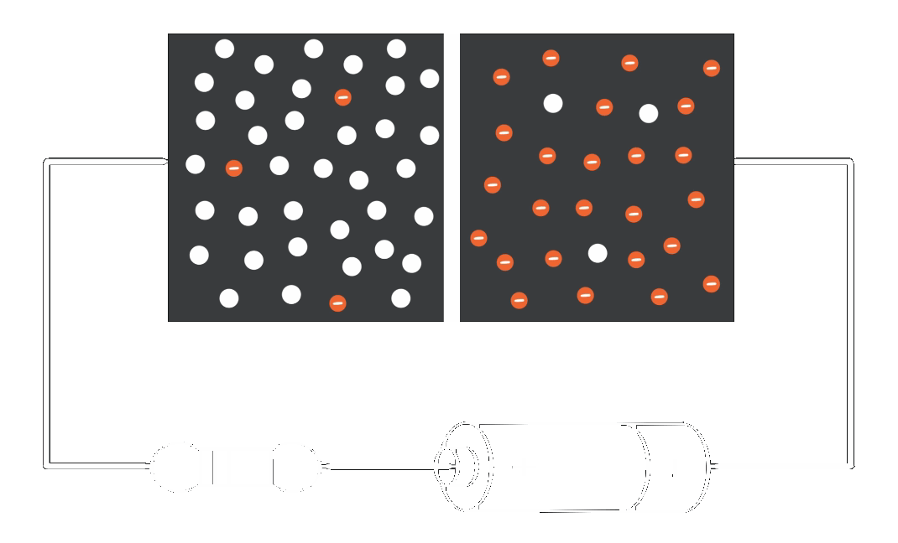

Forward Bias Characteristics of P-N Junction Diode

Battery Voltage =
Voltage across the Diode =
Current Value =
Identify the P substrate and N substrate. To start, Click the 'Form P-N Junction' button given below. After pressing each button, observe the changes in the circuit first and then read here.
While combining both flavours during fabrication, a junction is formed between p-region and n-region.
Click "Diffusion" button to see further changes in an unbiased PN junction diode.
Immediately after the junction is formed, due to non-uniform concentration on both sides,
electrons and holes starts moving across the junction. This is Diffusion.
Now, click "Apply Voltage" button to turn on the supply and vary the slider in steps of 0.05V to
observe uniform concentration.
Immobile charges are accumulated near the junction and acts as a barrier (depletion region) and stops the flow
of charge carriers across the junction.
We need charge carriers flow across the junction to make the device ON. Keep on varying the slider in step of 0.1V
to see what is coming up.
YES ! Now the flow of electrons and holes across the junction is RESTARTED
which is nothing but the charge carriers has gained energy more than the barrier potential
and thus the force towards the depletion region will be more making the depletion region
thinner.
As we observe while increasing voltage across the diode,
more free electrons gets generated thus mobility of electrons increases and current also increases.
At some point more electrons in the junction lead to velocity saturation and thus speed saturates.
So, after this even for a small amount of voltage there will be huge current growing exponentially.
1. To plot the I-V Characteristics of PN junction diode under forward bias condition.
2. To find the cut-in voltage and static resistance during forward bias.
2. To find the cut-in voltage and static resistance during forward bias.
Atomic Structure
Orbits / Shells
Valence Shell
Covalent Bond
Valence Band
Conduction Band
Forbidden Energy Gap
Doping
N Type
P type
Diffusion
Unbiased P-N Junction Diode
Depletion Region
Forward Biased
Atomic Structure
Imagine a tiny particle called an atom (Family) contains three types (Children) of charge carriers and a nucleus (Parent).
The three types are Protons, neutrons and electrons.
Protons and neutrons are present inside the nucleus at the centre of an atom.
Electrons revolve around the nucleus in shells in an energy level pattern.
Orbits / Shells
A shell can contain a maximum of 2n² electrons where n is the number of the shell.
Each shell has an energy level that creates a force of attraction towards the nucleus.
The shell nearer to nucleus has more force of attraction (less energy) towards nucleus.
And the shell far away from nucleus has less force of attraction (more energy) towards nucleus.
Valence Shell
The outermost shell of an atom is called the Valence shell.
The electrons in this shell are called valence electrons.
They need only small amount of energy to release the electrons from the valence shell.
The electrons which are released from the valence shell are free electrons.
Covalent Bond
Ge and Si have four electrons in their valence shell.
So far we discussed for a single atom and WKT combination of atoms makes a molecule.
The combination is nothing but sharing of valence electrons of one atom with the adjacent atom.
This merging of valence electrons are called covalent bonds.
This merging forms an energy band.
Valence Band
The energy band formed due to the merging of valence electrons is called Valence Band.
Conduction Band
The energy band formed due to the merging of free electrons is called Conduction Band.
Forbidden Energy Gap
When jumping from valence band to conduction band, electrons have to cross an energy gap.
This energy gap is called Forbidden Energy Gap.
FEG: Insulators > Semi-Conductors
While jumping to conduction band, the current generated is called drift current.
Doping
Free electrons are responsible for conduction.
Ge and Si have four electrons in their valence shell.
To generate more free electrons without rising temperature, we add Group V impurities.
Why Group V ?
Because they have 5 electrons in their valence shell.
While forming covalent bond, they leave the 5th electron in the valence band.
In the same fashion, we can create holes by adding Group III impurities.
Because they have only three valence electrons, leaving the 4th place as a hole in the covalent bond.
Why Group V ?
N Type
The semiconductor material in which there are more number of free electrons and few holes are called n type semiconductor.
Majority charge carriers - free electrons
Minority charge carriers - holes
P Type
The semiconductor material in which there are more number of holes and few free electrons are called p type semiconductor.
Majority charge carriers - holes
Minority charge carriers - free electrons
Diffusion
Due to non-uniform doping concentration of charged particles,
there will be movement of both electrons in n type as well as
This movement of charge carriers in a semiconductor is called diffusion.
holes in p type
from high concentration towards lower concentration until uniform concentration is attained.
Unbiased P-N Junction Diode
While p and n type are flavoured together, a junction exists between them.
One side of the junction, there are high concentration of electrons.
Another side of the junction, there are high concentration of holes.
This creates concentration gradient and thus diffusion starts.
Depletion Region
While diffusion occurs, electrons from n region enter into p region and recombine with acceptor atoms which are holes.
Similarly, holes from p region enter into n region and recombine with donor atoms which are electrons.
This recombination of electrons and holes creates :
Immobile positive ions on n region and immobile negative ions on p region.
These immobile charges acuumulated near the junction is called depletion region / barrier of a diode.
After the barrier is formed, the movement of electrons / holes across the junction will be stopped.
This recombination of electrons and holes creates :
Forward Biased
When the p-region is tied up to a higher potential and the n-region to a lower potential
the biasing condition is forward biased.
The barrier has a voltage level, more likely it act as an electric field.
When we give voltage above the barrier potential, the flow of charge carriers across the junction is restarted.
Thus the diode is in forward conduction mode.
Step 1:
Identify the P substrate and N substrate. Click the 'Form P-N Junction' button and observe the changes.
Step 2: After the junction is formed, click 'Diffusion' button and observe changes.
Step 3: Switch ON the power supply by clicking the 'Apply voltage' button.
Step 4: Gradually increase the battery (5V DC) voltage from 0 V in steps of 0.1 V and observe changes by varying the voltage slider.
Step 5: Observe the changes happening inside the device while performing Step 4.
Step 6: Note down the ammeter and voltmeter(Diode Voltage) readings.
Step 7: From the experiment carried out, find the cut-in voltage and static resistance during forward bias (R= V/I).
Step 8: Plot the readings in a graph and infer the I-V characteristics of the diode.
Step 2: After the junction is formed, click 'Diffusion' button and observe changes.
Step 3: Switch ON the power supply by clicking the 'Apply voltage' button.
Step 4: Gradually increase the battery (5V DC) voltage from 0 V in steps of 0.1 V and observe changes by varying the voltage slider.
Step 5: Observe the changes happening inside the device while performing Step 4.
Step 6: Note down the ammeter and voltmeter(Diode Voltage) readings.
Step 7: From the experiment carried out, find the cut-in voltage and static resistance during forward bias (R= V/I).
Step 8: Plot the readings in a graph and infer the I-V characteristics of the diode.
At the end of the experiment, a student will able to explain :
What is doping ?
Why an n-type semiconductor has electrons as majority carriers ?
Why a p-type semiconductor has holes as majority carriers ?
Why diffusion process occurs?
What is mobility of electrons ?
What is a depletion region ?
When the barrier potential is created ?
When and why the flow of charge carriers across the junction restarts ?
When a PN junction diode is forward biased ?
I-V relationship